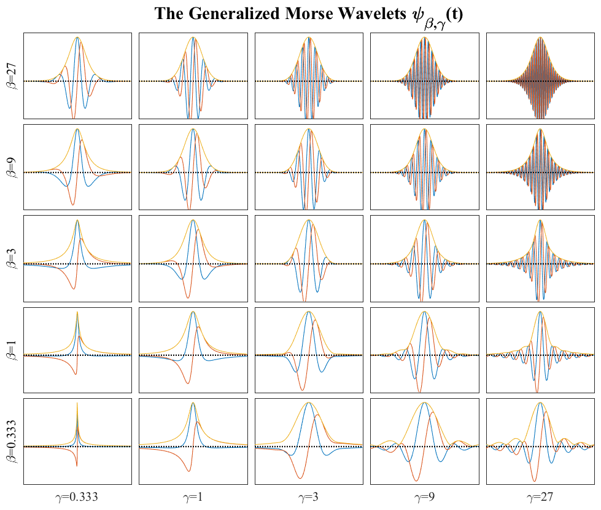

MORSEWAVE Generalized Morse wavelets of Olhede and Walden (2002). _______________________________________________________________________  _______________________________________________________________________ PSI=MORSEWAVE(N,GAMMA,BETA,FS) returns an N x LENGTH(FS) array PSI which contains time-domain versions of the generalized Morse wavelet specified by GAMMA and BETA, concentrated at frequencies FS. The vector FS specifically denote the *radian* frequencies at which the Fourier transform of the wavelets reach their maximum amplitudes. A set of frequencies appropriate for analyzing a given length time series can be easily chosen using MORSESPACE. Note that the wavelets are centered at the midpoint in time, that is, row number ROUND(SIZE(PSI,1)/2). FS assumes a unit sample rate. [PSI,PSIF]=MORSEWAVE(...) optionally returns a frequency-domain version PSIF of the wavelets. PSIF is the same size as PSI. _________________________________________________________________ Normalization MORSEWAVE supports two kinds of normalization for the wavelets. MORSEWAVE(...,'bandpass') uses "bandpass normalization", meaning that the FFT of the wavelet has a peak value of 2 for all frequencies FS. MORSEWAVE(...,'energy') uses the unit energy normalization. The time- domain wavelet energy SUM(ABS(PSI).^2,1) is then always unity. The bandpass normalization corresponds to having 1/S in the time-domain wavelet transform defintion, where S is the scale, while the unit energy normalization corresponds to 1/SQRT(S). MORSEWAVE uses bandpass normalization by default. _________________________________________________________________ Multiple orthogonal wavelets MORSEWAVE can compute multiple orthogonal versions of the generalized Morse wavelets, characterized by the order K. PSI=MORSEWAVE(N,K,GAMMA,BETA,FS) with a fifth numerical argument K returns an N x LENGTH(FS) x K array PSI which contains time-domain versions of the first K orthogonal generalized Morse wavelets. These K different orthogonal wavelets have been employed in multiwavelet polarization analysis, see Olhede and Walden (2003a,b). Again either bandpass or energy normalization can be applied. With bandpass normalization, all wavelets are divided by a constant, setting the peak value of the first frequency-domain wavelet equal to 2. _________________________________________________________________ Background For further details on generalized Morse wavelets, see the following publications. Lilly and Olhede (2012), Generalized Morse wavelets as a superfamily of analytic wavelets. IEEE Trans. Sig. Proc., 60 (11), 6036--6041. Lilly and Olhede (2009), Higher-order properties of analytic wavelets. IEEE Trans. Sig. Proc., 57 (1), 146--160. Olhede and Walden (2002), Generalized Morse Wavelets. IEEE Trans. Sig. Proc., 50 (11), 2661--2670. _________________________________________________________________ 'morsewave --t' runs a test. 'morsewave --f' generates some sample figures. Usage: psi=morsewave(N,ga,be,fs); [psi,psif]=morsewave(N,ga,be,fs,'bandpass'); [psi,psif]=morsewave(N,K,ga,be,fs,'energy'); [psi,psif]=morsewave(N,K,ga,be,fs,'bandpass'); _________________________________________________________________ This is part of JLAB --- type 'help jlab' for more information (C) 2004--2016 J.M. Lilly and F. Rekibi --- type 'help jlab_license' for details